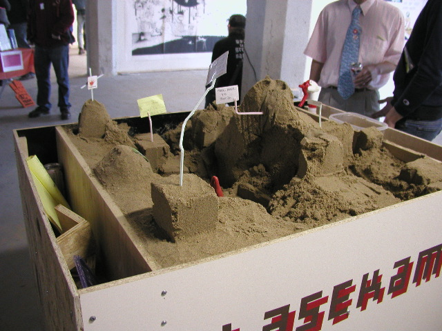

basekamp team > Projects
Mobile Sandbox Unit

We are also interested in the study: "Sandpiles of Opportunity: Success in the Art World", by Katherine Giuffre.
Abstract:
This study conceptualizes artists' careers as transitions through positions within a constantly shifting web of relationships that are without a priori hierarchical demarcations. Network analysis of this shifting web, from 1981 to 1992, produces three distinct career paths with differential outcomes in terms of the amount of critical notice received by each artist. Those who have had a long history of membership in loosely knit networks receive more critical attention than either artists who have had a long history of membership in tightly knit cliques or those with a history of sporadic connections to the art world. The career ladder is not so much a ladder as it is a sandpile, in which each actor's attempts to reach the top change the shape of the climb. Network theorists have long argued that the shape of an individual's social network has an impact on differential access to rewards and success (Burt 1992; Granovetter 1974; Howell 1969; Travers & Milgram 1969). Although many of these theorists implicitly notice that networks are constructed and reconstructed, and that former network contacts play an important role in present network usage (see especially Granovetter 1974), none has explicitly treated time in networks. Anheier, Gerhards and Romo (1995), for example, produce a compelling network picture of the German writers' world based on ties between authors, but they view the personal networks of these writers as static. That is, each writer has a network configuration that implicitly does not change over time. Likewise, Faulkner (1987), in his insightful study of Hollywood studio musicians, is explicitly concerned with the building of career trajectories, yet he uses network analytic tools in only a secondary way, which does not allow him to analyze the changes in network form over time. This article tests the hypothesis that different network shapes lead to different personal outcomes while explicitly incorporating time into the model. I argue that the shape of an artist's art-world network history influences success -- specifically, that a consistent history of a pattern of broad-ranging weak ties will lead to greater amounts of critical notice than will other types of network shapes, such as dense cliques of overlapping ties. This is especially interesting in the world of fine art, where talent (as opposed to structure) is supposedly driving careers but where network structure nevertheless has an important and profound effect on success.